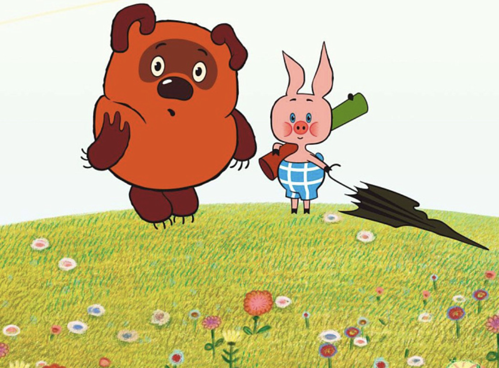

Week six: Thaw-Era Fantasies

- Tue, 30 Sept Read: Russian Cinema Reader (14-31)
Watch: Jack Frost (1964)
-
Thu, 2 Oct Read: Laura Pontieri, Soviet Animation and the Thaw (excerpt, Bb)
Watch: “Film, Film, Film” (1968)
Watch: “Winnie-the-Pooh”; “Junior and Karlsson” (1968)